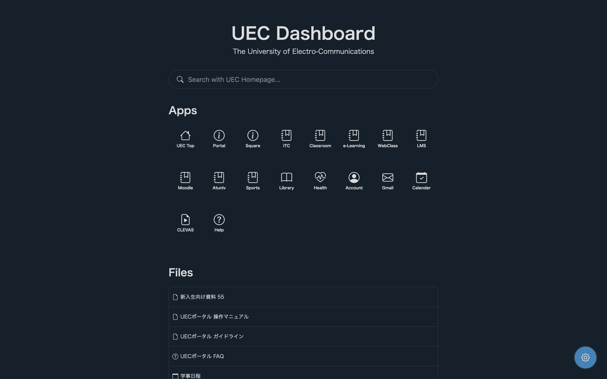

Top
UEC Dashboard
開発の経緯
電気通信大学には数多くのe-ラーニングシステム散財しており、また、様々な情報が様々なフィールドで発信されるため、学生個人にとっては、どの情報がどの場所で見られるのか、また、その場所にはどうやってアクセスするのかがわかりにくい状態だった。 そこで、電気通信大学のすべてのe-ラーニングシステムのリンク等を一つにまとめることでこれらの問題を解決するべく、このUEC DashboardというWebアプリケーションを開発した。
開発技術など
開発言語はHTML/CSSであり、開発期間は約2日である。開発は個人で行い、細かい機能のアップデートやバグの修正などを同級生、上級生を含めた4人程度で行った。このアプリケーションはPWAとしてスマホでネイティブアプリケーションのように使用することも可能である。
実際のサービス
実際に以下のボタンからアクセスすることができる。
アクセスすると以下のようなサイトが表示され、電気通信大学のe-ラーニングシステムにアクセスすることが可能となる。設定画面から、ライトモードとダークモードを変更することができる。
カスタマイズ方法
また、カスタムCSSを適応することも可能である。以下のコードをStylusなどのブラウザ拡張機能でこのページに適応することで好きな背景画像を適応することができる。
custom.csshtml{
background: linear-gradient(rgba(0,0,0,0.4),rgba(0,0,0,0.4)),url('ここに画像のURLを入れる');
background-position: left;
background-size: cover;
background-attachment: fixed;
}
*{
color: #fff;
border-color: #fff !important;
}
#header, #main, #footer{
background-color: transparent;
}
#search #search_input{
border: none;
transition: .3s ease-in-out background-color;
}
#search #search_input:focus-visible{
border: none;
background-color: rgba(200, 200, 200, .3) !important;
}
#search #search_icon{
color: #fff !important;
}
.app:hover{
background-color: rgba(200, 200, 200, .3) !important;
}
#other_files ul, #other_files ul li a{
border: none;
}
#other_files ul li a{
border-radius: 5px;
}
#other_files ul li a:hover{
background-color: rgba(200, 200, 200, .3) !important;
}
#openBtn{
display: none !important;
}
実際に表示してみると以下のように表示される。現在開発者は、アニメ、「アイドルマスター シンデレラガールズ U149」の画像を背景画像に設定している。

今後の展望
今後、このサービスをもっと大きなものにしていこうと考えている。学生個人個人にカスタマイズされた時間割や、課題の提出用リマインダーなどの新機能を追加し、より多くの人に使っていただきたいと考えている。